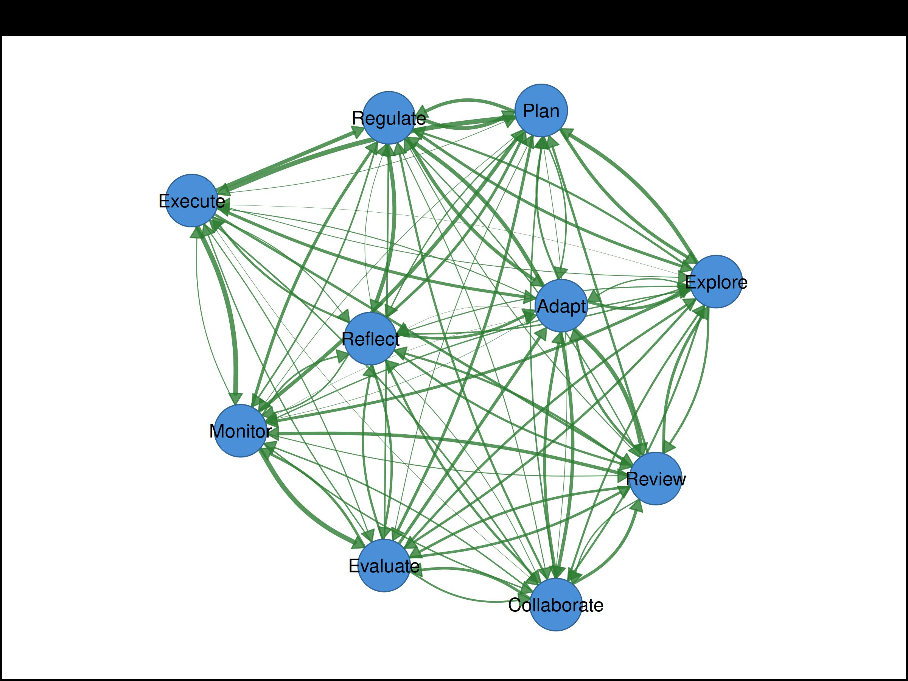
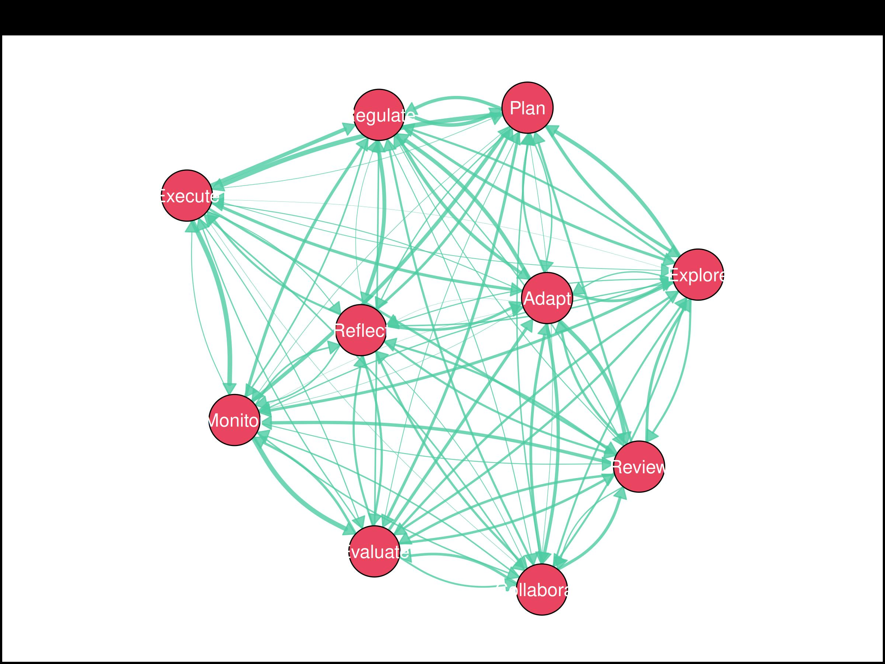
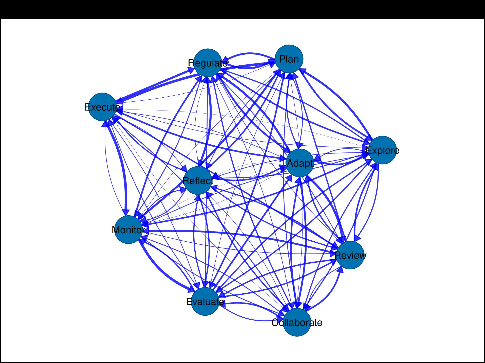
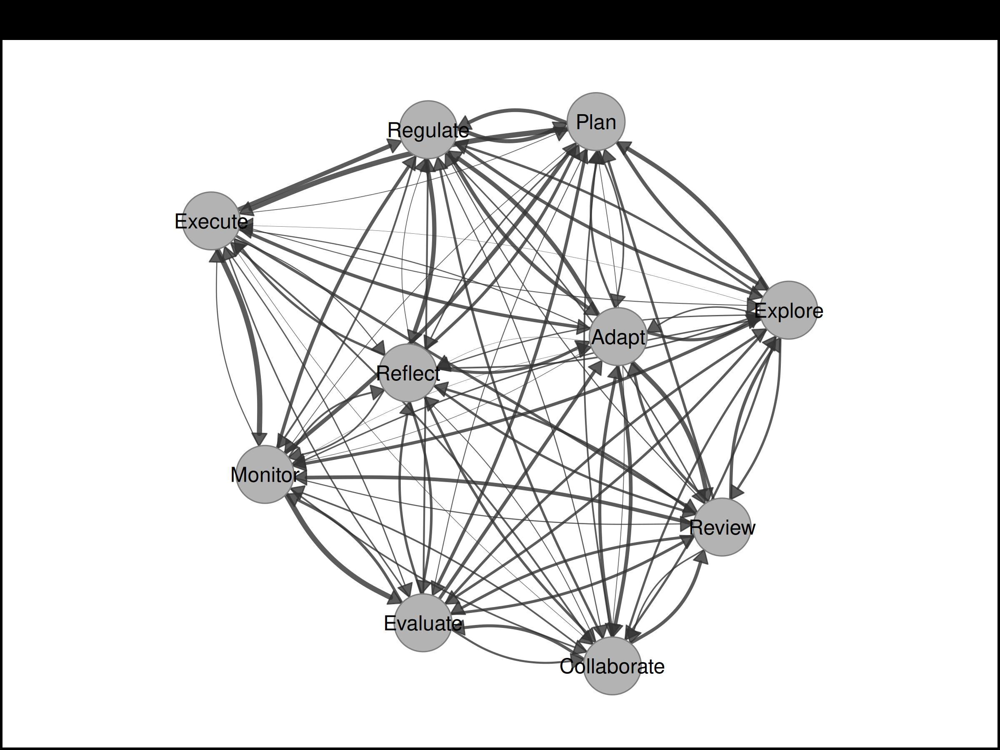
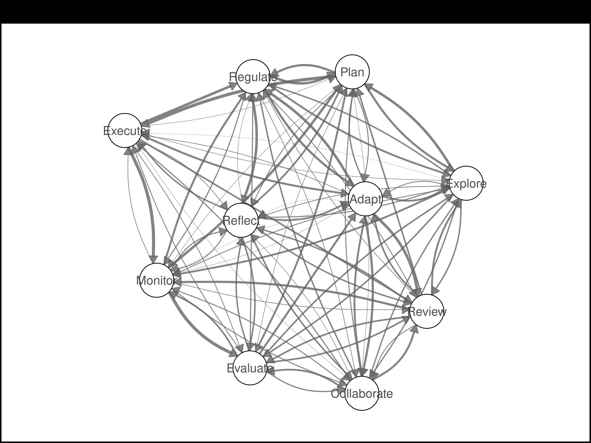
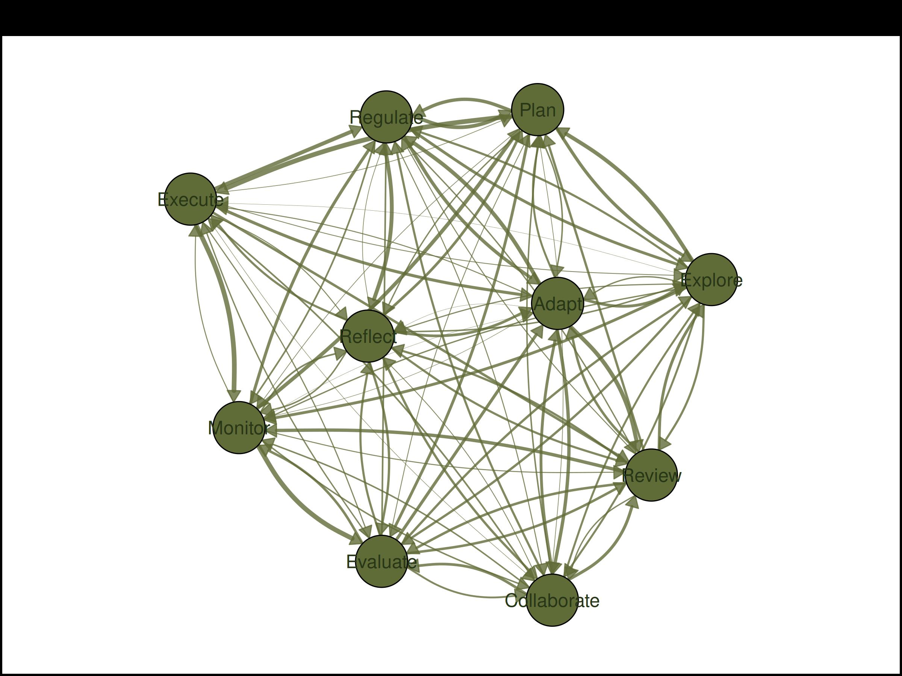
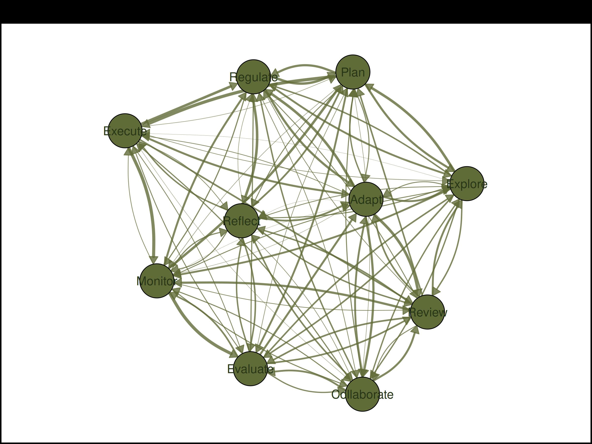

We create a directed, row-normalized transition matrix with self-regulation style state labels typical of TNA (Transition Network Analysis).
set.seed(42)
states <- c("Explore", "Plan", "Monitor", "Evaluate", "Adapt",
"Reflect", "Regulate", "Execute", "Collaborate", "Review")
## Generate random directed weights
mat <- matrix(runif(100, 0, 0.5), nrow = 10, dimnames = list(states, states))
diag(mat) <- 0
## Add structure: make some transitions stronger
mat["Explore", "Plan"] <- 0.6
mat["Plan", "Execute"] <- 0.7
mat["Execute", "Monitor"] <- 0.5
mat["Monitor", "Evaluate"] <- 0.6
mat["Evaluate", "Adapt"] <- 0.55
mat["Adapt", "Regulate"] <- 0.45
mat["Regulate", "Reflect"] <- 0.5
mat["Reflect", "Collaborate"] <- 0.4
mat["Collaborate", "Review"] <- 0.5
mat["Review", "Explore"] <- 0.35
## Row-normalize
mat <- mat / rowSums(mat)
round(mat, 2)
#> Explore Plan Monitor Evaluate Adapt Reflect Regulate Execute
#> Explore 0.00 0.22 0.16 0.13 0.07 0.06 0.12 0.01
#> Plan 0.18 0.00 0.03 0.16 0.08 0.07 0.19 0.27
#> Monitor 0.07 0.21 0.00 0.27 0.01 0.09 0.17 0.05
#> Collaborate Review
#> Explore 0.11 0.12
#> Plan 0.03 0.00
#> Monitor 0.08 0.05
#> [ reached 'max' / getOption("max.print") -- omitted 7 rows ]1. Basic splot()
splot(mat, layout = "spring", seed = 42, edge_labels = TRUE,
edge_label_size = 0.6)Spring layout with edge weights
splot(mat, layout = "circle")Circle layout
3. Node Shapes Showcase
Display all available shapes, one per node.
shapes <- c("circle", "square", "triangle", "diamond", "pentagon",
"hexagon", "ellipse", "heart", "star", "cross")
splot(mat,
layout = "circle",
node_shape = shapes,
node_fill = palette_rainbow(10),
node_size = 6,
node_border_width = 2,
label_size = 0.9,
edge_labels = TRUE,
edge_label_size = 0.5
)All 10 node shapes
4. Edge Styling
splot(mat,
layout = "spring",
seed = 42,
curvature = 0.25,
arrow_size = 0.015,
edge_style = "solid",
edge_start_style = "dashed",
edge_start_length = 0.15,
edge_labels = TRUE,
edge_label_size = 0.5
)
Curved edges with dashed starts and weights shown
set.seed(10)
n_edges <- sum(mat > 0)
splot(mat,
layout = "spring",
seed = 42,
edge_ci = runif(n_edges, 0.05, 0.2),
edge_ci_alpha = 0.15,
edge_ci_scale = 2
)Confidence interval underlays
5. Pie Chart Nodes
Basic pie chart
set.seed(1)
pie_vals <- lapply(1:10, function(i) runif(4))
pie_cols <- c("#E41A1C", "#377EB8", "#4DAF4A", "#FF7F00")
splot(mat,
layout = "circle",
node_shape = "pie",
pie_values = pie_vals,
pie_colors = pie_cols,
node_size = 6
)Pie chart nodes with 4 segments each
Pie with varying segment counts
set.seed(11)
## Each node has a different number of segments
pie_vals2 <- lapply(1:10, function(i) runif(sample(2:6, 1)))
pie_cols2 <- c("#E41A1C", "#377EB8", "#4DAF4A", "#FF7F00", "#984EA3", "#A65628")
splot(mat,
layout = "spring",
seed = 42,
node_shape = "pie",
pie_values = pie_vals2,
pie_colors = pie_cols2,
node_size = 6,
edge_labels = TRUE,
edge_label_size = 0.5
)Pie nodes with 2-6 segments per node
Pie with custom styling on dark theme
set.seed(12)
pie_vals3 <- lapply(1:10, function(i) runif(3))
pie_cols3 <- c("#66c2a5", "#fc8d62", "#8da0cb")
splot(mat,
layout = "circle",
node_shape = "pie",
pie_values = pie_vals3,
pie_colors = pie_cols3,
pie_border_width = 2,
node_size = 7,
theme = "dark"
)Styled pie nodes on dark theme
Pie with per-node color palettes
Each node can have its own set of colors using a list of color vectors.
set.seed(20)
## Create a separate network for this demo
n <- 10
mat2 <- matrix(runif(n*n, 0, 0.4), n, n)
diag(mat2) <- 0
mat2 <- mat2 / rowSums(mat2)
rownames(mat2) <- colnames(mat2) <- LETTERS[1:n]
## Each node has 3 segments with different colors
pie_vals_multi <- lapply(1:n, function(i) runif(3))
pie_cols_multi <- list(
c("#E63946", "#F1FAEE", "#A8DADC"),
c("#264653", "#2A9D8F", "#E9C46A"),
c("#F72585", "#7209B7", "#3A0CA3"),
c("#003049", "#D62828", "#F77F00"),
c("#606C38", "#283618", "#DDA15E"),
c("#0077B6", "#00B4D8", "#90E0EF"),
c("#9B2226", "#AE2012", "#BB3E03"),
c("#023047", "#219EBC", "#8ECAE6"),
c("#5F0F40", "#9A031E", "#FB8B24"),
c("#2D00F7", "#6A00F4", "#8900F2")
)
splot(mat2,
layout = "circle",
node_shape = "pie",
pie_values = pie_vals_multi,
pie_colors = pie_cols_multi,
node_size = 6,
node_border_width = 1.5,
edge_labels = TRUE,
edge_label_size = 0.5
)Pie nodes with different color palettes per node
6. Simple Donut Nodes
Single-value donut fill (0-1 progress indicator).
set.seed(2)
fills <- runif(10, 0.3, 0.95)
splot(mat,
layout = "circle",
node_shape = "donut",
donut_fill = fills,
donut_color = "steelblue",
node_size = 6,
edge_labels = TRUE,
edge_label_size = 0.5
)Donut nodes with random fill proportions and weights
7. Segmented Donut Nodes
Multi-segment donuts using donut_values (list of segment
vectors) and donut_colors.
set.seed(21)
## Each node has 3 segments
donut_vals <- lapply(1:10, function(i) c(runif(1), runif(1), runif(1)))
donut_cols <- list(c("#E63946", "#457B9D", "#2A9D8F"))
splot(mat,
layout = "circle",
donut_values = donut_vals,
donut_colors = donut_cols,
donut_inner_ratio = 0.6,
node_size = 6,
node_border_width = 1.5,
edge_labels = TRUE,
edge_label_size = 0.5
)Segmented donut nodes with 3 categories each
Segmented donuts with per-node colors
set.seed(22)
## Each node has 4 segments with unique colors
donut_vals2 <- lapply(1:10, function(i) runif(4))
donut_cols2 <- list(
c("#003049", "#D62828", "#F77F00", "#FCBF49"),
c("#606C38", "#283618", "#DDA15E", "#BC6C25"),
c("#0077B6", "#00B4D8", "#90E0EF", "#CAF0F8"),
c("#9B2226", "#AE2012", "#BB3E03", "#CA6702"),
c("#5F0F40", "#9A031E", "#FB8B24", "#E36414"),
c("#023047", "#219EBC", "#8ECAE6", "#FFB703"),
c("#264653", "#2A9D8F", "#E9C46A", "#F4A261"),
c("#F72585", "#B5179E", "#7209B7", "#560BAD"),
c("#10002B", "#240046", "#3C096C", "#5A189A"),
c("#D8F3DC", "#B7E4C7", "#95D5B2", "#74C69D")
)
splot(mat,
layout = "spring",
seed = 42,
donut_values = donut_vals2,
donut_colors = donut_cols2,
donut_inner_ratio = 0.55,
donut_bg_color = "gray95",
node_size = 6,
node_border_width = 1.2,
donut_border_width = 0.8
)
Segmented donuts with different color palettes per node
8. Polygon Donut Shapes
set.seed(3)
fills <- runif(10, 0.4, 0.9)
donut_shapes <- c("circle", "hexagon", "square", "diamond", "triangle",
"pentagon", "circle", "hexagon", "square", "diamond")
splot(mat,
layout = "circle",
node_shape = "donut",
donut_fill = fills,
donut_shape = donut_shapes,
donut_color = palette_viridis(10),
node_size = 6
)Donut rings with different polygon shapes
9. Donut with Value Display
set.seed(4)
fills <- runif(10, 0.2, 0.95)
splot(mat,
layout = "circle",
node_shape = "donut",
donut_fill = fills,
donut_color = "coral",
donut_show_value = TRUE,
donut_value_digits = 0,
donut_value_suffix = "%",
donut_value_size = 0.8,
node_size = 6
)Donut nodes showing fill percentages
10. Donut + Pie Combo
Outer donut ring with inner pie chart segments.
set.seed(5)
fills <- runif(10, 0.5, 0.9)
pie_vals <- lapply(1:10, function(i) runif(3))
pie_cols <- c("#E41A1C", "#377EB8", "#4DAF4A")
splot(mat,
layout = "circle",
node_shape = "donut",
donut_fill = fills,
donut_color = "steelblue",
pie_values = pie_vals,
pie_colors = pie_cols,
node_size = 7
)Donut ring with inner pie segments
Segmented donut + pie with per-node colors
set.seed(23)
## Outer donut: 3 segments per node
outer_vals <- lapply(1:10, function(i) c(runif(1), runif(1), runif(1)))
outer_cols <- list(
c("#E63946", "#457B9D", "#2A9D8F"),
c("#F72585", "#7209B7", "#3A0CA3"),
c("#003049", "#D62828", "#F77F00"),
c("#606C38", "#283618", "#DDA15E"),
c("#0077B6", "#00B4D8", "#90E0EF"),
c("#9B2226", "#AE2012", "#BB3E03"),
c("#023047", "#219EBC", "#8ECAE6"),
c("#5F0F40", "#9A031E", "#FB8B24"),
c("#2D00F7", "#6A00F4", "#8900F2"),
c("#264653", "#2A9D8F", "#E9C46A")
)
## Inner pie: 4 segments per node
pie_vals <- lapply(1:10, function(i) runif(4))
pie_cols_inner <- list(
c("#264653", "#E9C46A", "#F4A261", "#E76F51"),
c("#F1FAEE", "#A8DADC", "#457B9D", "#1D3557"),
c("#FCBF49", "#F77F00", "#D62828", "#003049"),
c("#DDA15E", "#BC6C25", "#606C38", "#283618"),
c("#CAF0F8", "#90E0EF", "#00B4D8", "#0077B6"),
c("#CA6702", "#BB3E03", "#AE2012", "#9B2226"),
c("#FFB703", "#FB8500", "#023047", "#219EBC"),
c("#E36414", "#FB8B24", "#9A031E", "#5F0F40"),
c("#8900F2", "#6A00F4", "#2D00F7", "#A100F2"),
c("#F4A261", "#E9C46A", "#2A9D8F", "#264653")
)
splot(mat,
layout = "circle",
donut_values = outer_vals,
donut_colors = outer_cols,
donut_inner_ratio = 0.7,
pie_values = pie_vals,
pie_colors = pie_cols_inner,
node_size = 6,
node_border_width = 1.5,
donut_border_width = 0.6,
pie_border_width = 0.3,
edge_labels = TRUE,
edge_label_size = 0.5
)Segmented outer donut with inner pie, per-node colors
Donut + Pie on dark theme
set.seed(13)
outer_vals <- lapply(1:10, function(i) c(runif(1), runif(1)))
outer_cols <- list(c("#F72585", "#7209B7"))
pie_vals <- lapply(1:10, function(i) runif(4))
pie_cols <- list(c("#4361EE", "#3A0CA3", "#560BAD", "#7209B7"))
splot(mat,
layout = "spring",
seed = 42,
donut_values = outer_vals,
donut_colors = outer_cols,
donut_inner_ratio = 0.68,
donut_bg_color = "#2B2D42",
pie_values = pie_vals,
pie_colors = pie_cols,
node_size = 6,
node_border_color = "#EDF2F4",
node_border_width = 1,
donut_border_width = 0.5,
pie_border_width = 0.2,
background = "#1A1A2E",
positive_color = "#4CC9F0",
edge_alpha = 0.8,
label_color = "white",
edge_labels = TRUE,
edge_label_size = 0.5,
edge_label_color = "white"
)
#> Warning: 'positive_color' is deprecated, use 'edge_positive_color' instead.Donut + pie combo on dark theme with weights
11. Double Donut
Two concentric donut rings per node.
Simple double donut (progress rings)
set.seed(6)
outer_fills <- runif(10, 0.4, 0.9)
inner_fills <- runif(10, 0.3, 0.8)
splot(mat,
layout = "circle",
node_shape = "donut",
donut_fill = outer_fills,
donut_color = "steelblue",
donut2_values = inner_fills,
donut2_colors = "coral",
node_size = 7
)Double donut: outer and inner progress rings
Segmented double donut
Both rings with multiple segments and different colors per node.
set.seed(24)
## Outer donut: 4 categories
outer_vals <- lapply(1:10, function(i) c(3, 2, 2, 1) + runif(4, -0.5, 0.5))
outer_cols <- list(
c("#003049", "#D62828", "#F77F00", "#FCBF49"),
c("#606C38", "#283618", "#DDA15E", "#BC6C25"),
c("#0077B6", "#00B4D8", "#90E0EF", "#CAF0F8"),
c("#264653", "#2A9D8F", "#E9C46A", "#F4A261"),
c("#F72585", "#B5179E", "#7209B7", "#560BAD"),
c("#9B2226", "#AE2012", "#BB3E03", "#CA6702"),
c("#023047", "#219EBC", "#8ECAE6", "#FFB703"),
c("#5F0F40", "#9A031E", "#FB8B24", "#E36414"),
c("#10002B", "#240046", "#3C096C", "#5A189A"),
c("#D8F3DC", "#B7E4C7", "#95D5B2", "#74C69D")
)
## Inner donut: 3 categories
inner_vals <- lapply(1:10, function(i) c(2, 3, 1) + runif(3, -0.3, 0.3))
inner_cols <- list(
c("#E63946", "#457B9D", "#2A9D8F"),
c("#F1FAEE", "#A8DADC", "#1D3557"),
c("#FCBF49", "#F77F00", "#003049"),
c("#DDA15E", "#BC6C25", "#283618"),
c("#CAF0F8", "#00B4D8", "#0077B6"),
c("#BB3E03", "#AE2012", "#9B2226"),
c("#FFB703", "#FB8500", "#023047"),
c("#E36414", "#9A031E", "#5F0F40"),
c("#3C096C", "#240046", "#10002B"),
c("#95D5B2", "#B7E4C7", "#D8F3DC")
)
splot(mat,
layout = "spring",
seed = 42,
donut_values = outer_vals,
donut_colors = outer_cols,
donut_inner_ratio = 0.65,
donut2_values = inner_vals,
donut2_colors = inner_cols,
donut2_inner_ratio = 0.35,
donut_bg_color = "white",
node_size = 5,
donut_border_width = 0.6,
node_border_width = 1.2,
node_border_color = "gray40"
)Segmented double donut with per-node colors
Double donut + pie (triple layer)
set.seed(25)
## Outer donut
outer_vals <- lapply(1:10, function(i) c(runif(1), runif(1), runif(1)))
outer_cols <- list(c("#E63946", "#457B9D", "#2A9D8F"))
## Inner donut (progress)
inner_vals <- as.list(runif(10, 0.4, 0.9))
inner_cols <- list("#F4A261")
## Center pie
pie_vals <- lapply(1:10, function(i) sample(1:5, 4))
pie_cols <- list(c("#264653", "#E9C46A", "#F4A261", "#E76F51"))
splot(mat,
layout = "circle",
donut_values = outer_vals,
donut_colors = outer_cols,
donut_inner_ratio = 0.7,
donut2_values = inner_vals,
donut2_colors = inner_cols,
donut2_inner_ratio = 0.45,
pie_values = pie_vals,
pie_colors = pie_cols,
donut_bg_color = "gray95",
pie_border_width = 0.3,
donut_border_width = 0.8,
node_border_width = 1.5,
node_border_color = "gray30",
node_size = 6,
edge_labels = TRUE,
edge_label_size = 0.5
)Triple layer: outer donut + inner donut + center pie
Double donut with polygon shapes
set.seed(15)
outer_fills <- runif(10, 0.5, 0.9)
inner_fills <- runif(10, 0.4, 0.8)
splot(mat,
layout = "circle",
node_shape = "donut",
donut_fill = outer_fills,
donut_color = "#e78ac3",
donut_shape = "hexagon",
donut2_values = inner_fills,
donut2_colors = "#66c2a5",
node_size = 7,
theme = "minimal"
)Double donut with hexagon shape
12. All 7 Themes
themes <- c("classic", "dark", "colorblind", "gray", "minimal", "viridis", "nature")
for (th in themes) {
splot(mat, layout = "spring", seed = 42, theme = th,
title = paste("Theme:", th))
} 

13. Weight Handling
splot(mat, layout = "spring", seed = 42, weight_digits = 1,
edge_labels = TRUE, edge_label_size = 0.6)Weights rounded to 1 digit with labels
splot(mat, layout = "spring", seed = 42, threshold = 0.1,
edge_labels = TRUE, edge_label_size = 0.6)Threshold: only edges >= 0.1
splot(mat, layout = "spring", seed = 42, edge_scale_mode = "log", cut = 0)
#> Warning: 'cut' is deprecated, use 'edge_cutoff' instead.Logarithmic edge scaling
14. Edge Labels
splot(mat,
layout = "spring",
seed = 42,
edge_label_style = "estimate",
edge_label_digits = 2,
edge_label_size = 0.6,
edge_label_bg = "white"
)Edge labels showing estimates
set.seed(7)
n_edges <- sum(mat > 0)
splot(mat,
layout = "spring",
seed = 42,
edge_label_template = "{est}{stars}",
edge_label_p = runif(n_edges, 0, 0.1),
edge_label_stars = TRUE,
edge_label_digits = 2,
edge_label_size = 0.6,
edge_label_bg = "white"
)Custom label template with significance stars
15. Directed vs Undirected
splot(mat,
layout = "spring",
seed = 42,
directed = TRUE,
curvature = 0.2,
arrow_size = 0.015,
edge_labels = TRUE,
edge_label_size = 0.5
)Directed with reciprocal curves and weights
Undirected (symmetric)
16. Legends
groups <- rep(c("Cognitive", "Social", "Metacognitive"), length.out = 10)
splot(mat,
layout = "spring",
seed = 42,
groups = groups,
node_fill = palette_colorblind(10),
legend = TRUE,
legend_position = "topright",
legend_edge_colors = TRUE
)Legend with groups and edge colors
17. TNA-Style with Donut Fills
Simulating initial state probabilities as donut fills, similar to
from_tna() output.
set.seed(8)
## Simulate initial state probabilities
initial_probs <- runif(10, 0.05, 0.5)
initial_probs <- initial_probs / sum(initial_probs)
splot(mat,
layout = "spring",
seed = 42,
node_shape = "donut",
donut_fill = initial_probs / max(initial_probs),
donut_color = "steelblue",
donut_show_value = TRUE,
donut_value_digits = 2,
node_size = 6,
curvature = 0.2,
arrow_size = 0.015,
theme = "minimal",
edge_labels = TRUE,
edge_label_size = 0.5
)TNA-style: donut fills represent initial state probabilities
Generated with cograph 1.5.2